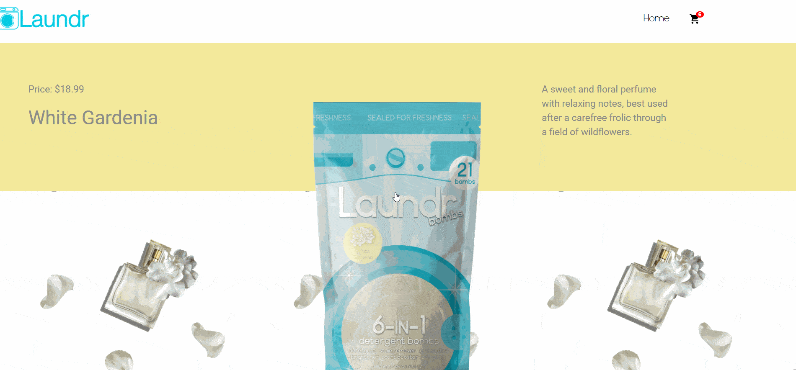
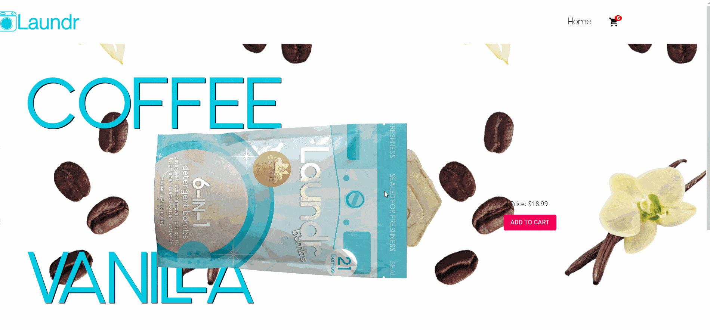
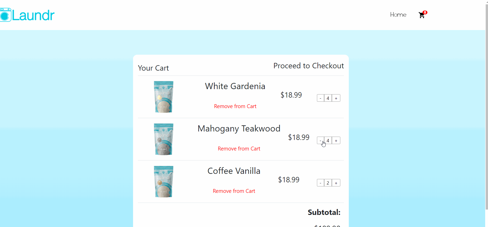

For this project, my team and I developed an e-commerce site for Laundr, a Gainesville-based company that offers on-demand laundry services and sells its own laundry bombs. The site was built mainly using React, it showcases their laundry products and is integrated with Stripe API
Laundr is a company that picks up your dirty laundry, gets it cleaned, and delivers it
back to you. However, they wanted to release a line of Laundr Bombs, which take
the place of detergent in a load of laundry. To advertise and sell these Laundr Bombs,
an Ecommerce site was needed. This is the purpose of this app.
This app was initially created using the MERN (MongoDB, Express, React, Node) stack,
but as the development got further, the team realized that storing tha cart contents using the local storage within
the browsers was a much simpler alternative than communicating back and forth with a database. The front-end was still implemented with
React, which was converted to static files which are serviced through the back-end. This
back-end is centered around server.js which runs using express and node.
This app has three types of pages, the landing page, the product pages, and the cart
page.
My role in this project was of Front-end Developer, for which I was in charge of implementing the scroll snapping, scroll animations, tessellations, buttons, and most of the content for the website.
The landing page has scroll snapping for each of the offered products and the product pages have a scroll animation featuring a laundry bomb rolling out of the bag as the user scrolls down, which was done with GSAP. Tessellations were added in the background of product pages with additional CSS.
 Click here for a detailed document of the project's progress with sprints and backlogs.